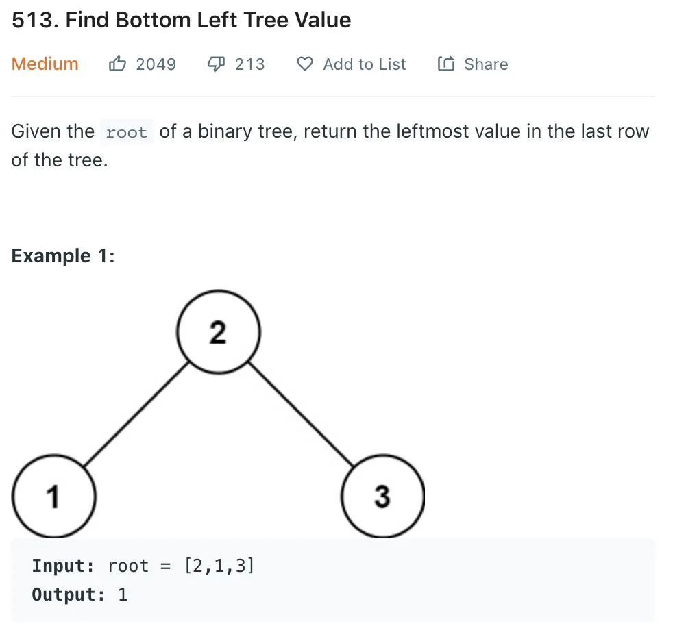
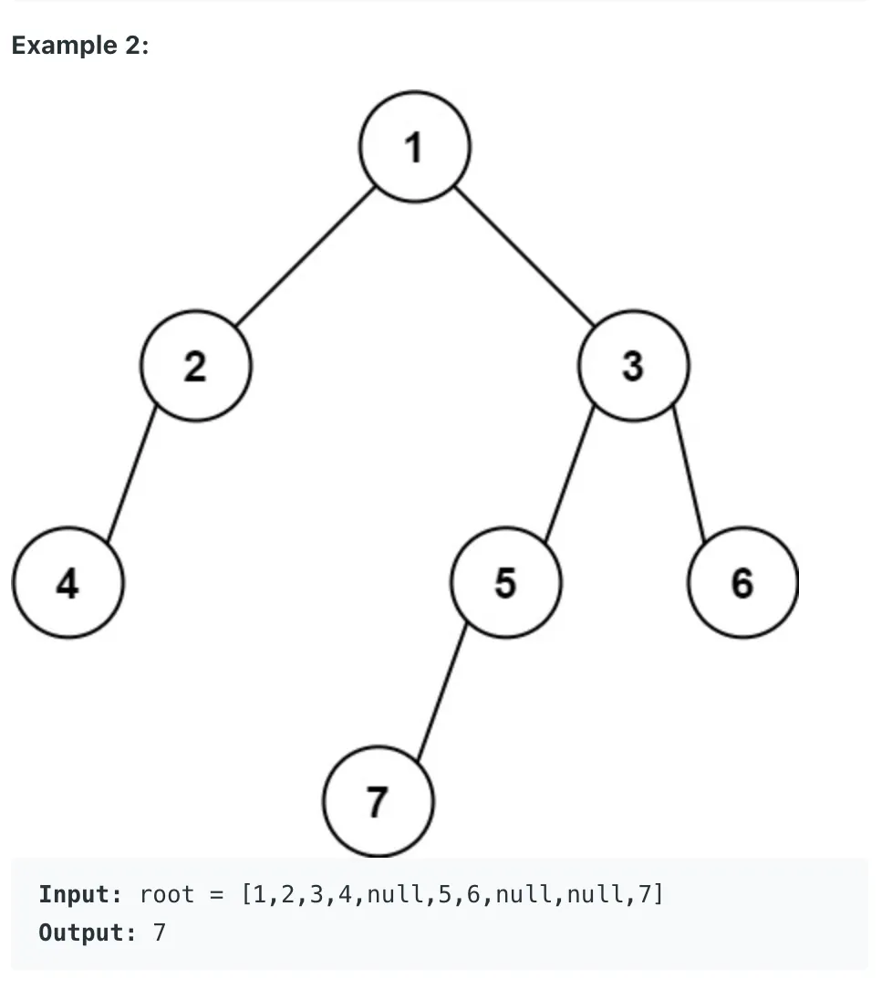

513. Find Bottom Left Tree Value
Question


先自己想想看 🤔Try it yourself first 🤔
✍🏽 My Solution
Runtime: 2 ms, faster than 47.10% of Java online submissions for Find Bottom Left Tree Value. Memory Usage: 43.7 MB, less than 64.80% of Java online submissions for Find Bottom Left Tree Value.
class Solution {
public int findBottomLeftValue(TreeNode root) {
Queue<TreeNode> queue = new LinkedList<>();
queue.add(root);
int result = -1;
while (!queue.isEmpty()) {
TreeNode node = queue.poll();
result = node.val;
if (node.right != null) {
queue.add(node.right);
}
if (node.left != null) {
queue.add(node.left);
}
}
return result;
}
}
🧠 Thought Process
- Why did I choose this particular implementation?
- 參考王爭
- 題目：找最後一層最左邊的節點
- 思路：從右往左遍歷，最後一個就是最後一層的最左邊節點
- 建立 queue 及 result，先將根加點加入隊列
- 遍歷 queue，把 queue 先拿出來，將 queue 取出的 node 值 set 進 result 變數
- 先查看右節點有值加入隊列，再查看左節點有值就加入隊列，之後一直循環，直到queue為空，result 就會是最左邊最底的值
- What is the time/space complexity of my solution? How do I know?
- time：O(n)
- space: O(n)